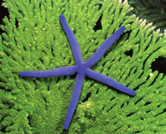
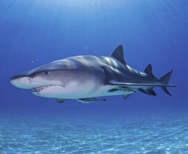
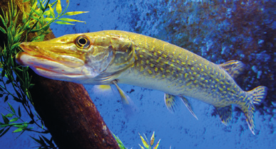
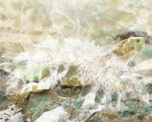

¿Qué característica indica si un animal es o no un vertebrado?
¿Qué significa que los vertebrados tienen simetría bilateral? ¿Es esta una característica exclusiva de estos animales?
Indica cuáles de los siguientes animales son vertebrados: ratón, víbora, delfín, avestruz, salamandras y babosa.
Elabora una presentación sobre cinco animales de cada grupo de animales vertebrados y alguna característica de ellos.
¿Por qué los científicos incluyen a los murciélagos entre los mamíferos y no entre las aves?
Investiga la diferencia que existe entre los términos ovíparo, vivíparo y ovovivíparo.
Plantea una hipótesis que explique por qué los órganos de los sentidos en los vertebrados se localizan en la cabeza.
Indica cuáles de estos animales son vertebrados y a qué grupo de vertebrados pertenecen.
Razonar si un erizo es un animal vertebrado o invertebrado.
Imágenes de vertebrados

Estrella de mar

Tiburón

Pez lucio

Iguana verde
Anota los alimentos derivados de animales que tomas durante una semana y señala a qué grupo pertenecen. ¿Crees que tu cultura afecta el tipo de alimentos que consumes? Razona tu respuesta comparando la gastronomía de tu país con la de uno en la otra punta del planeta.
¿Qué estructuras presenta la piel de cada uno de los grupos de vertebrados?
¿Todos los vertebrados obtienen el oxígeno que necesitan para respirar del mismo modo? Explica tu respuesta.
Copia y relaciona en tu cuaderno.
Los peces • Tienen plumas, dos patas y dos alas.
Anfibios • Poseen la piel desnuda y respiran por ella y por pulmones.
Reptiles • Cuentan con escamas y respiran por pulmones.
Aves • Tienen pelo y respiran por pulmones.
Mamíferos • Poseen escamas y respiran mediante branquias.
Los lucios, depredadores de los ríos y lagos europeos, siguen cazando eficazmente aun impidiéndoles la visión. Plantea una hipótesis que sirva para explicar este hecho.